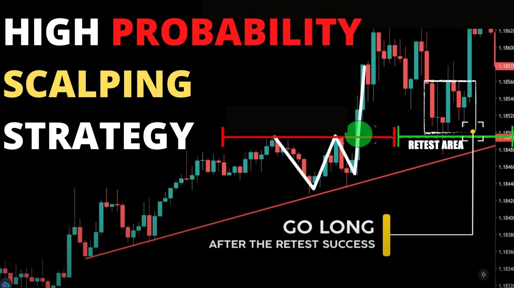

High-Probability Trading: The Best Scalping & Day Trading Strategies for 2026
In the fast-paced markets of 2026, finding a "holy grail" strategy is less about a single indicator and more about confluence and strict risk management. Whether you are a high-frequency scalper or a patient day trader, these three battle-tested strategies have shown consistent results in both crypto and forex markets.
The following systems rely on "Trend Filters" to ensure you are never trading against the institutional flow, significantly increasing your win rate compared to retail oscillators.
1. The 1-Minute Scalping King (75% WR)
This 1-minute system is designed for high-frequency traders who want to capitalize on rapid intraday trends while filtering out sideways "noise."
- The Setup: Uses the 1-Minute Scalping System (88 period), ATR Stop Loss Finder (0.85 multiplier), and ADX.
- The Rules: Buy when the baseline is green, the candle body is fully above it, and the ADX green line crosses the red line.
- The Edge: By replacing the standard Williams %R with ADX, the strategy eliminates dozens of "fakeouts," leading to a massive 453% account growth in testing.
- Watch Strategy Tutorial
2. Institutional Day Trading (77% WR)
If you prefer the 15-minute timeframe, this "Trend Meter" strategy focuses on catching massive trend expansions without capping your profit.
- The Setup: 200 EMA (Macro Trend), 50 EMA (Micro Trend), Trend Meter, and Volatility Oscillator.
- Exit Rule: Unlike fixed RR strategies, this system uses a "trailing exit" based on the Trend Meter's red/green dots, allowing you to catch 5:1 or 6:1 Risk-to-Reward trades.
- Validation: Only take longs when the 50 EMA is above the 200 EMA and volatility is high.
- Watch Strategy Tutorial
3. The 8-Week Scalping Monster (82% WR)
Boasting the highest verified win rate on the list, this 1-minute scalping strategy focuses on extreme precision over volume.
- Strategy Goal: 1:1.5 Risk-to-Reward ratio.
- Key Metric: 82% Real Win Rate over an 8-week testing period.
- Ideal Market: Best used during the London/New York overlap where liquidity is at its peak.
- Watch Strategy Tutorial
4. Strategy Performance Comparison
| Strategy | Win Rate | Timeframe | Risk-Reward |
|---|---|---|---|
| ADX Scalper | 75% | 1 Min | 1:1.5 |
| Trend Meter Day Trade | 77% | 15 Min | Trailing (Dynamic) |
| Precision Scalper | 82% | 1 Min | 1:1.5 |
5. Key Execution Rules for 2026
- The "2% Rule": Never risk more than 2% of your account per trade, especially on 1-minute timeframes where emotions run high.
- Candle Closure: Never enter a trade based on a "feeling." Always wait for the trigger candle to close to confirm the indicator signal.
- Spread Awareness: On 1-minute strategies, ensure you are using a "Raw Spread" broker/exchange, otherwise, the fees will eat your 1.5 RR targets.